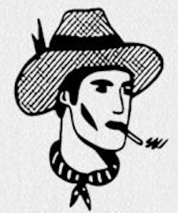

^——-^
( 0 · 0 )
\ ∞ \ _/)
| |/_/
O____ o/
_______________________________________________
| IS THAT A |
| BOY OR A GIRL |
|  |
| |
| |
| |
| |
| |
| MA'AM THAT'S A COWBOY |
| |
|_______________________________________________|
The second picture looks more like a picture because of the use of language.
This is a picture about picture that reflects on the nature of itself!
Is a picture of cowboy really a cowboy? Or is it just a symbol/image/signifier?